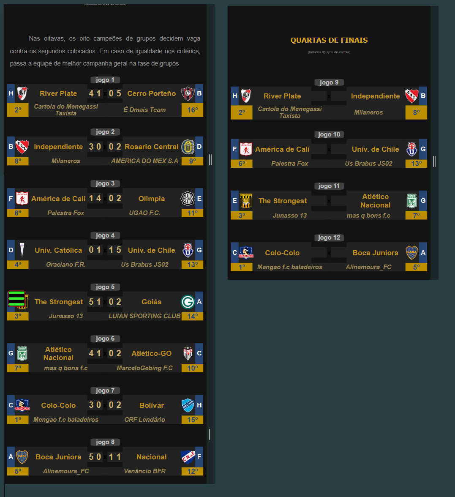

Campeonato de Cartola
A vitória no cartola é o sucesso do seu time!

Redação Cartola - 23/10/2024 - 07h56min
Boca Júniors da cartoleira "Alinemoura_FC", é, ao lado do "Mengão fc baladeiros", treinador do Colo-colo, um dos dois representantes da liga fluminense da cidade de rio claro, denominada "Premious League", a garantir participação nas quartas-de-finais da principal competição de copa interligas da temporada. A classificação veio por uma espetácular pontuação acima de 100 pontos que, aliada ao fraco desempenho do treinador do Nacional do Uruguai (64pts), possibilitou a formação de um placar recheado de gols a seu favor, 5x1, muito superior à derrota que havia sofrido no primeiro jogo, pelo placar de 1x0. Com três participações na Libertadores, está é a primeira vez que a treinadora "Aline Moura" obtem classificação para as quartas-de-finais, com o mesmo ocorrendo com o clube Boca Júniors, que na temporada passada restou eliminado ainda na fase de grupos, quando treinado pelo cartoleiro da "Bonzamigos FR".
Abaixo, os oito resultados dos confrontos das oitavas, com destaque para a classificação do Univ. de Chile contra a Univ. Católica, uníco confronto em que um segundo lugar de grupo superou adversário que terminou em primeiro lugar. 